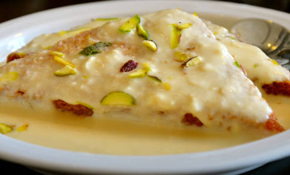

Shahi Tukda
~Chef Ishita Shah

Ingredients
•5 bread slices
•1/2 ml water
•2 crushed black cardamom
•3 cup milk
•1 handful cashews
•1 handful pistachios
•1/2 cup ghee
•1/2 cup sugar
•6 strand saffron
•2 tbspn kevra essence (rose syrup)
•2 pinches powdered green cardamom
•1 handful almonds
•2 tbspn sugar
Recipe-
• Take a saucepan and heat water along with sugar, once the sugar dissolves add the saffron strands. Let it boil, till the syrup achieves two string consistency. Once the sugar syrup turns a little thick. Put off the stove and keep aside.
• Take another pan, boil the milk in medium flame until the milk is reduced to about 1/4th of its original quantity. Do not forget to stir continuously, once the milk is reduced, add cardamom powder, 1/4th part of sugar syrup (prepared in step 1) and mix well. Continue to heat it by stirring continuously for 5 more minutes. Once done, remove the pan from the flame and your rabri is ready. Keep aside until required. Finish with rose water .
• Now, take the bread slices and cut their sides and slice it as two triangles. Then, heat ghee in a pan and shallow fry the bread until they are crisp and golden brown on each side. Once the bread slices are fried, soak each slice in the remaining sugar syrup for about a minute.
• Arrange it on the serving dish. Pour the prepared rabri ,over the bread slices and garnish with the chopped nuts. If you are in a jiffy you can also use condensed milk.
Back to Categories (श्रेणियों में वापस)
Back to Recipes (व्यंजनों पर वापस जाएं)